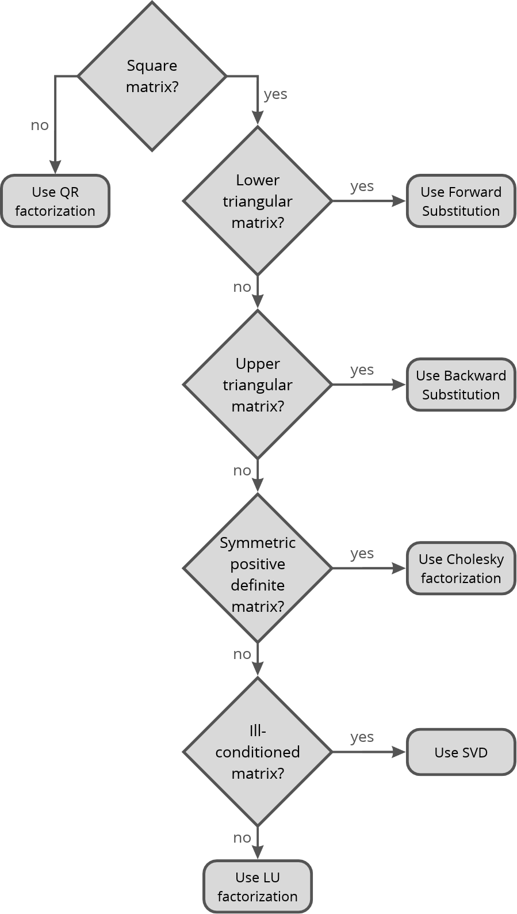

Robotat Linalg: Linsolve - Linear Solver
Methods for solving linear systems \(\textbf{Ax} = \textbf{b}\)
1. Introduction
Linear systems are encountered in linear and quadratic optimization problems. For that reason,linsolve provides different methods for solving these systems.
This guide explains the structure of the linear solver and how to use the different methods provided in linsolve.
2. Linear solver structure and use
The linear systems solved bylinsolve have the form of the form \(\textbf{Ax} = \textbf{b}\), where \(A\) is a matrix,
and \(x\) and \(b\) are vectors. When using linsolve, the matrix and vectors for the linear system must be declared and initialized as
seen in the guide for matf32, remembering that the number of columns of \(A\) must match the number of elements in the vectors:
#define M (3)
#define N (4)
float A_data[MAX_MAT_SIZE];
float x_data[MAX_MAT_SIZE];
float b_data[MAX_MAT_SIZE];
matf32_t A, x, b;
matf32_init(&A, M, N, A_data);
matf32_init(&x, N, 1, x_data);
matf32_init(&b, N, 1, b_data);
linsolve solver. The following example uses random matrices,
and then solves the system:
// Fills the matrices with random values
matf32_randn(&A, 0, 1);
matf32_randn(&x, 0, 1);
matf32_randn(&b, 0, 1);
// Solves the linear system and obtains values for the solution x
linsolve(&A, &b, &x);
linsolve routine in the above example chooses the most adequate method, from the available selection of methods,
